Someday/Maybe
I have a bunch of random ideas.
As one does.
I don’t know what to do with most of them so I usually just stash them. “Someday/Maybe”, as they call it in GTD.
Here’s one such stash that I had in a Notion file, from wayyyy back in the day:
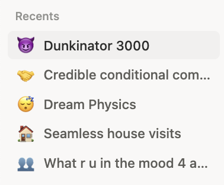
And here’s one of those random ideas, expanded:
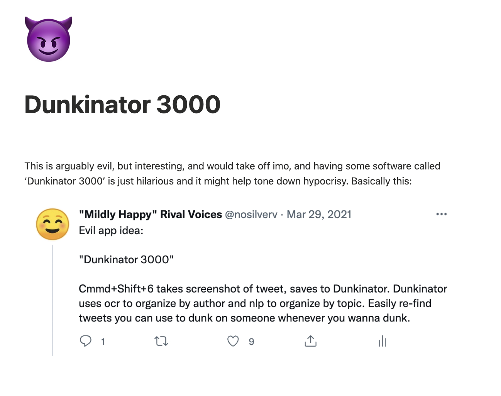
As you can see some of them were pretty whimsical and there was nothing to them. Or so I thought.
“Or so I thought” because I recently got another random idea: what if I just fed them to Claude? It couldn’t be… unless?
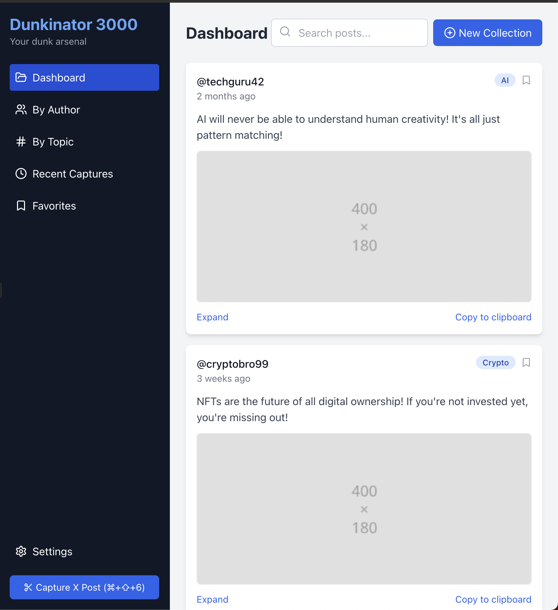
It sucked. But that was a year ago. I did it again, recently. No more instructions than ‘make a mockup salespage for this’.
And it got it it.
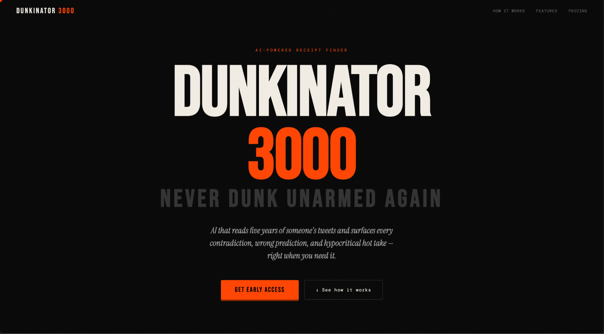
Omg, thought I, when it did. If this one is better…
I immediately fed all the other ideas to Claude, and it oneshotted each and every single one of them.
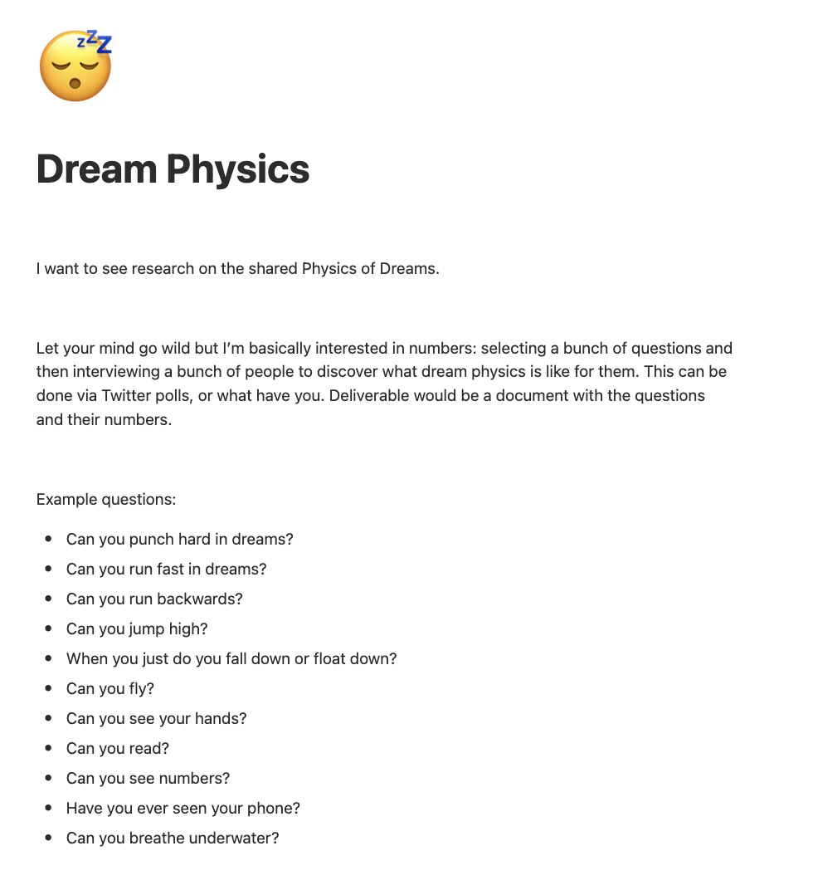
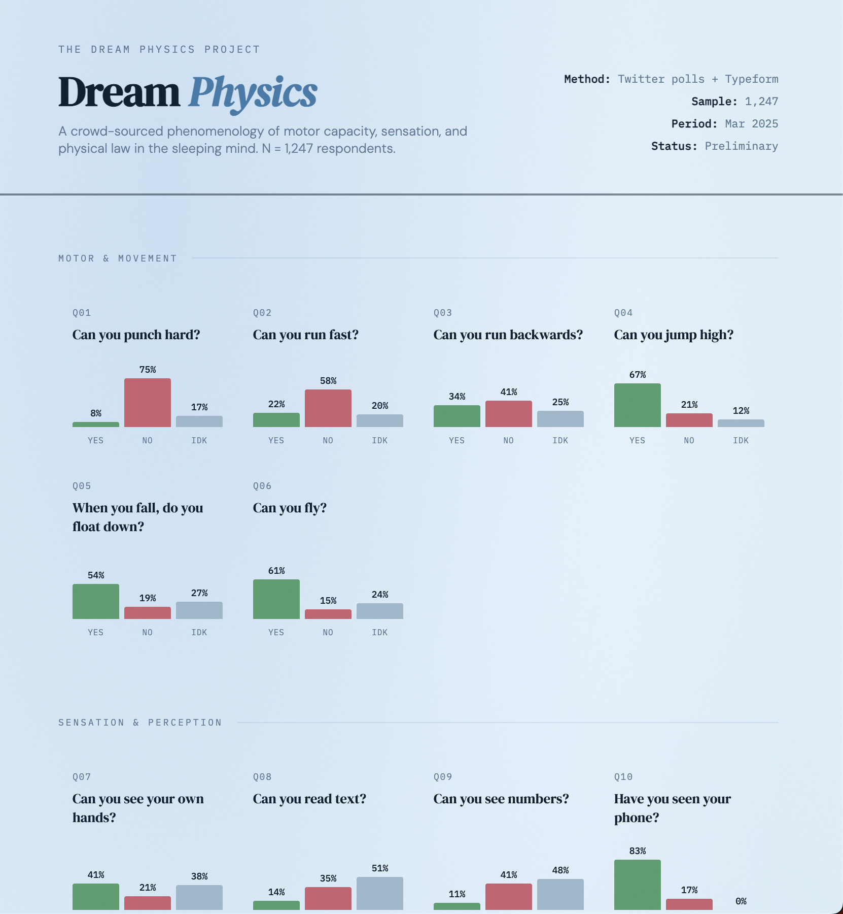
Dream Physics
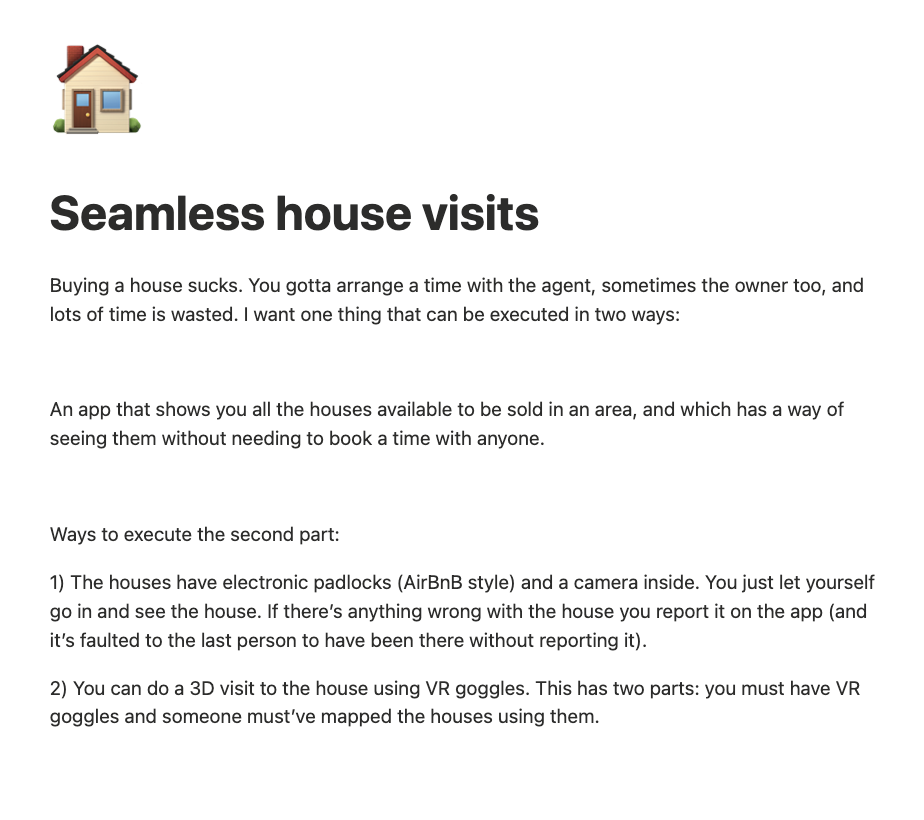
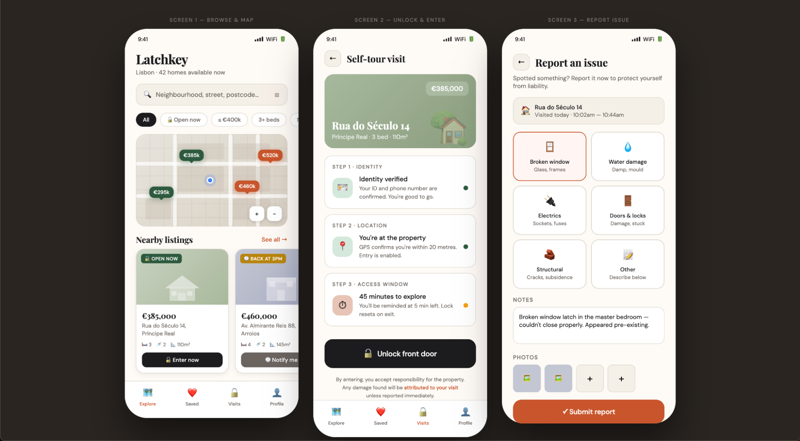
Seamless house visits
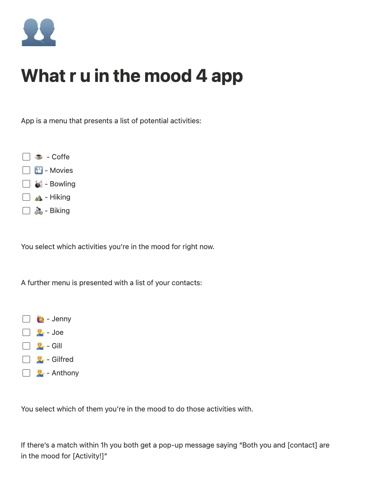
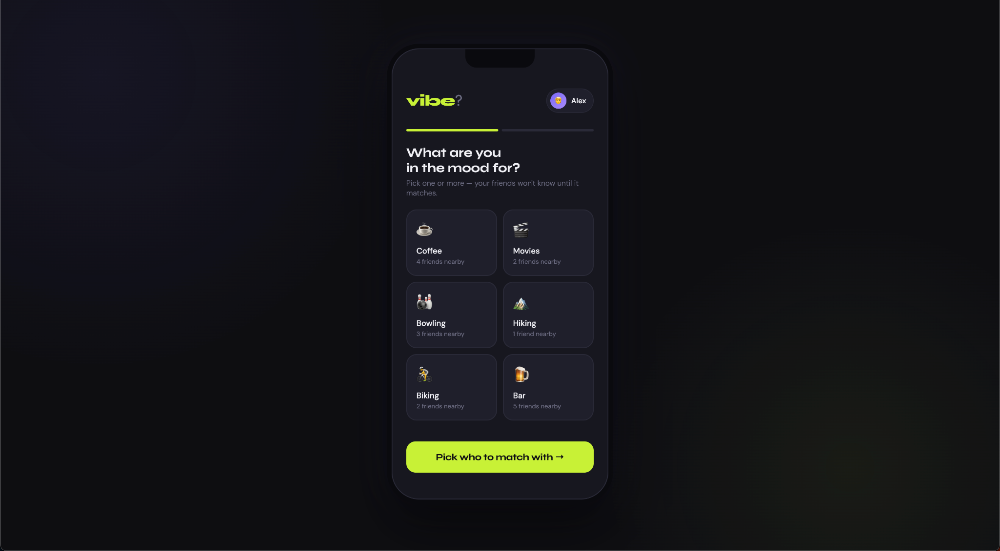
Mood matching map
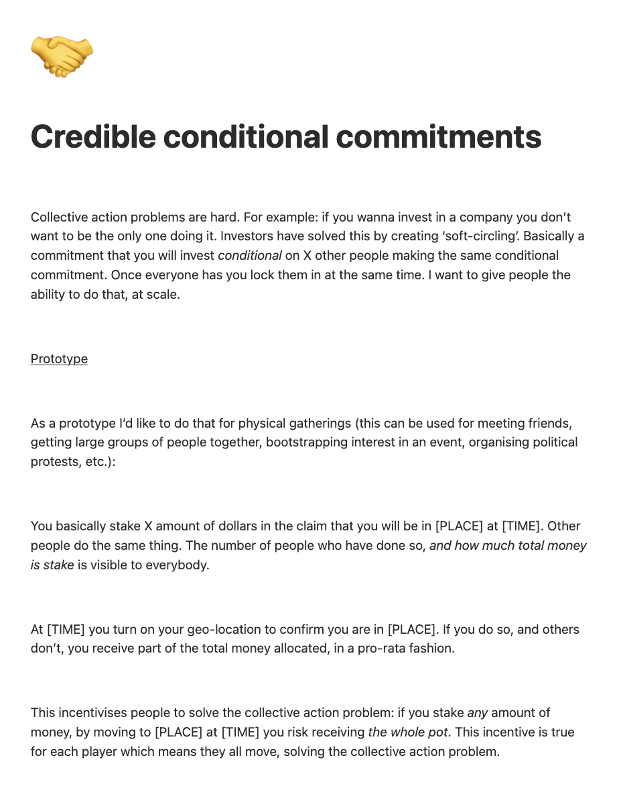
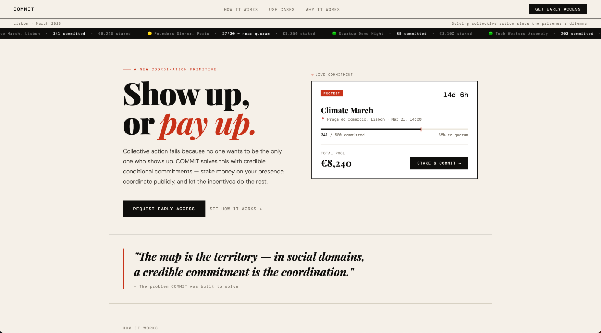
Enabling credible conditional commitments (aka, I’ve since learned, “mutual assurance contracts”)
Someday/Maybe has arrived.